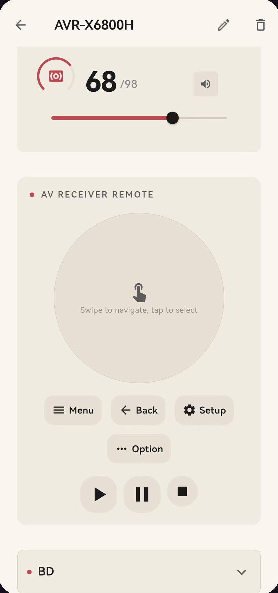

一个 App，掌控整个家庭影院
Remote97 用纯软件替代昂贵的中控主机：通过本地 WiFi 直接控制功放、电视与流媒体播放器——不依赖云端，无需额外硬件，更没有订阅费。
全部 5 种下载方式见下方 ↓

几分钟即可上手
无需中控主机、无需布线、无需注册账号。
安装并打开
从 Google Play、App Store、Microsoft Store，或直接下载 APK / ZIP。无需注册账号，也没有繁琐的设置向导——打开即用。
自动发现
Remote97 通过 SSDP、mDNS 与定向探针扫描你的 WiFi，列出所有兼容的设备。从列表里挑出属于你的那些即可。
控制与自动化
点开任意设备即可遥控。把设备归入房间，再把它们串成「观影模式」这样的一键场景，按顺序自动执行。
实体遥控器能做的，这里都能做
更少的遥控、更统一的界面、更强的自动化。
统一音量与静音
跨设备统一调节音量与静音，多台设备同步不混乱。
输入源 / 信号切换
一键在 HDMI、电视、机顶盒等信号源之间切换。
电源与待机
开机、关机、待机一键完成，可批量操作整组设备。
音效模式 / 环绕预设
切换 Dolby、DTS、 stereo 等音效模式（Denon / Marantz 等支持时）。
设备级 EQ 与音调
在支持的功放 / 音响上调节均衡器、低音、高音。
屏幕文字输入
为 Apple TV、Android TV 等调用系统键盘输入账号与搜索词。
多房间分组
把 Sonos、BluOS、WiiM 归为一组，一处控制全屋声音。
自定义遥控布局
按使用习惯排列按键，常用功能触手可及。
深浅主题随房间
内置水墨与液态玻璃等多套主题，匹配不同光线环境。
Windows 键盘快捷键
在电脑上当遥控器用时，可用键盘快速调音量、切源。
为真实的居家夜晚而做
不是功能清单，而是你每天会用到的时刻。
观影之夜
一键进入观影模式，灯光、设备、声音自动就位。
- 功放开机，自动切到 Apple TV 输入
- 电视亮起，音量设到合适档位
- 无需再找第三把遥控器
全屋音乐
把分散的音响收进一个界面，一处操控全屋声音。
- Sonos + BluOS + WiiM 统一编组
- 同步播放，或分区各听各的
- 音量、曲目一处调
静夜模式
深夜不想吵到家人，几步把声音收起来。
- 一键降低整体音量
- 切到立体声、关掉低音炮
- 不必再摸黑找遥控器
为整套影音系统而生
过去需要一把把遥控器做的事，现在集中在一处。
纯局域网控制
所有指令都走本地网络，不经过任何云端服务器——家里外网断了，照样能控。
多品牌统一遥控
功放、电视、流媒体播放器集中在同一界面，告别茶几上的遥控器堆。
一键场景
「观影模式」一键联动：开功放、切信号源、调音量，按你编排的顺序自动完成。
自动发现
打开 App 即自动扫描同一 WiFi 下的设备，选中即连，无需手动配置 IP。
多端覆盖
Android、Windows、iOS 三端同一体验，手机、平板、电脑都能当遥控器。
持续扩展
设备支持按路线图稳步增加：Roku、Yamaha、Sonos、Bluesound 等已在路上。
自定义控制板
把不同设备的常用控件聚合到同一页面——功放音量、电视电源、Apple TV 导航自由排布，组成一个专属遥控界面，一屏掌控整个影音系统。
下载 Remote97
点击即下载，无需跳转。商店版与直链版内容一致。
支持的设备
覆盖主流家庭影院品牌，持续增加中。
功放 AVR
Denon · Marantz · Yamaha · Onkyo
电视与盒子
Sony BRAVIA · Samsung · LG webOS · Xiaomi / Redmi · Apple TV · Roku
流媒体与音响
Sonos · Bluesound (BluOS) · WiiM · Arylic (LinkPlay)
隐私优先的设计
控制指令只留在你的家里。
无云端
每一条指令都走本地网络，不经过任何外部服务器；路由器外网断了也能控。
无需账号
没有注册、没有登录、没有邮箱。打开就能用，不绑定任何身份。
无追踪
应用不收集任何分析数据或遥测；你的使用习惯不会被上报。
常见问题
还有疑问？这里也许有答案。